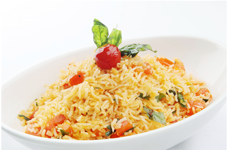

Cooked Rice - 2 cups
Onion - 1/2 (chopped)
Ginger garlic Paste - 1 tsp
Tomatoes - 1 (chopped) + 2 (pureed)
Green Chilies - 2 (chopped)
Red Chili Powder - 2 tsp
Garam Masala - a pinch
Cilantro - for garnish
Salt - as needed
Oil/Ghee - 2 tbsp
Mustard seeds - 1/4 tsp
Fennel/Cumin seeds - 1/4 tsp
Channa Dal - 1 tsp (optional)
Urad dal - 1 tsp
Cashews - 1 tbsp
Curry Leaves - 1 spring
You can cook the rice or use leftover rice to make tomato rice.
Heat oil in a pan and splutter the mustard seeds.
Add channa dal, urad dal and fennel seeds and fry till it turns reddish brown in colour.
Add cashews, green chilies and curry leaves.
Add the onions and fry till it turns translucent.
Add ginger garlic paste and fry for 30 seconds.
Next add the pureed tomatoes and cook till the raw smell vanishes.
Add the chopped tomato, salt, garam masala and chili powder. Cook for a couple of minutes.
Now toss the cooked rice with this masala. Check for salt and other seasonings and adjust according to your taste.
Finally sprinkle with some chopped cilantro and switch off.